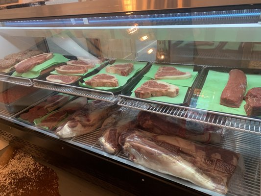
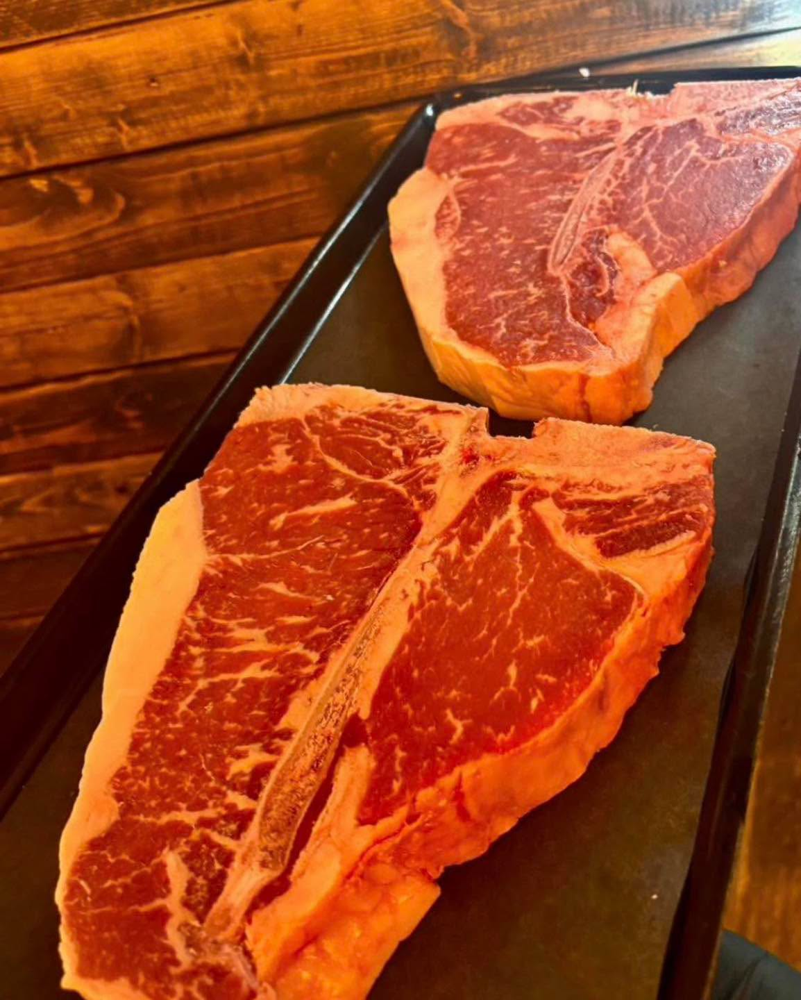
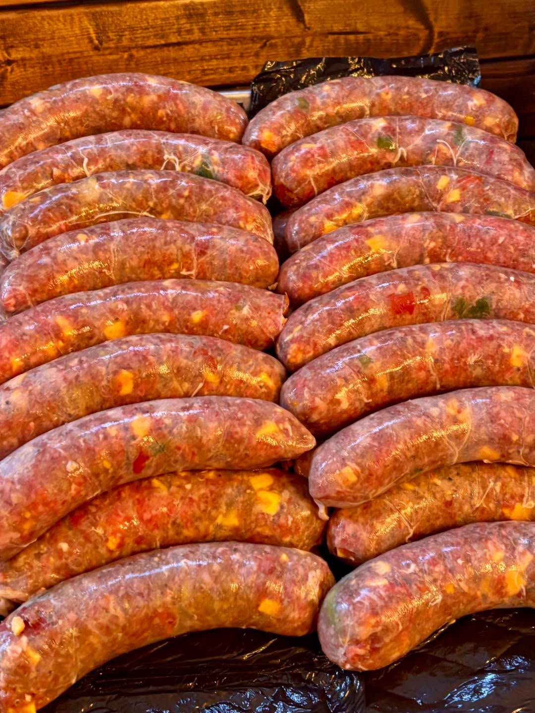
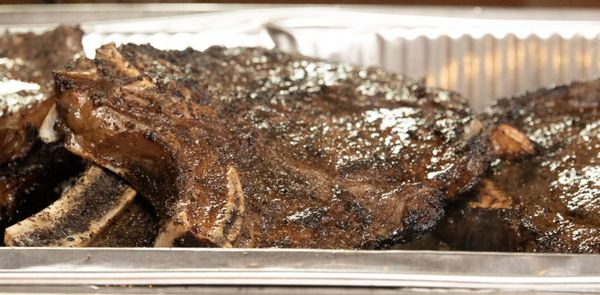
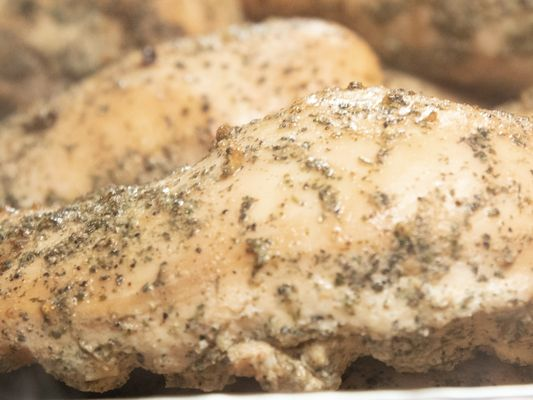
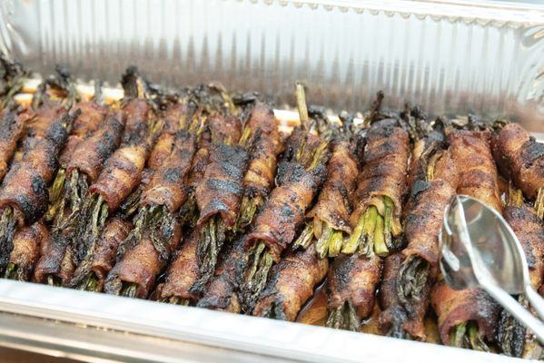
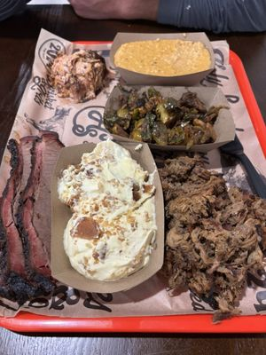

01 · Beef
Steak night, upgraded.
Ribeye, filet, strips, sirloin, specialty cuts and dry-aged selections.

Premium steaks. Dry-aged beef. House bacon. Cajun boudin. Custom family packs. Prepared dinners. And a butcher who still expects you to ask questions.
The Coast already has enough places to buy meat. This is where you go when the meat is the point.
Hand-cut steaks, pork, chicken, sausage, seafood, dry-aged selections and freezer-ready staples. Inventory changes; quality does not.

Ribeye, filet, strips, sirloin, specialty cuts and dry-aged selections.





Prepared dinners and rotating specials turn the butcher counter into the easiest dinner decision you make all week. Customers regularly call out wings, burgers and rotating dinner specials.
First place four consecutive years.
First place four consecutive years.
Seasonal cuts, dry-aged features, prepared dinners and shop specials move fast. Call ahead for today’s case, or follow the shop for the newest drops.
From wedding meat service to mobile food specials, The Butcher on Tucker serves beyond the retail counter. Planning an event? Start with a quick inquiry.
Request catering →Custom meat-focused menus for weddings, private events and gatherings.
A licensed mobile unit expands service beyond the storefront.
Get the order moving before you ever step through the door.